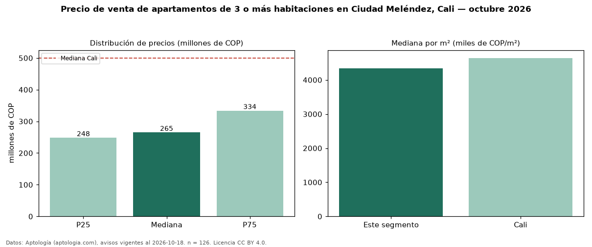

Precio de venta de apartamentos de 3 o más habitaciones en Ciudad Meléndez, Cali — octubre 2026
En Ciudad Meléndez, Cali, la mediana de precio de venta de apartamentos de 3 o más habitaciones es COP 265 millones, según 126 avisos vigentes. Frente a la mediana de Cali para apartamentos de 3 o más habitaciones (COP 500 millones), queda 47 % por debajo. Por metro cuadrado, la mediana es COP 4,34 millones/m² (n = 126 avisos con área), 7 % por debajo de Cali (COP 4,64 millones/m²). Son 48 % de los 262 avisos de apartamentos en venta de la zona, cuya mediana general es COP 266 millones (−1 %). El área mediana anunciada es 65 m². La administración mediana declarada es COP 295.000 al mes (n = 105). El estrato más frecuente es 4 (76 % de los avisos con estrato). 83 % de los avisos con el dato declara parqueadero o cochera. Datos: Aptología (aptologia.com), CC BY 4.0 — https://www.aptologia.com/venta/cali/ciudad-melendez. Archivos: PDF, CSV con las cifras y gráfica PNG.

| Avisos únicos | 126 |
|---|---|
| Percentil 25 | COP 248.250.000 |
| Mediana | COP 265.000.000 |
| Percentil 75 | COP 333.750.000 |
| Mediana por m² | COP 4.335.784 |
Fuente: avisos vigentes de portales inmobiliarios recopilados por Aptología, deduplicados (mínimo 30 avisos únicos por celda). Precios pedidos, no cerrados. Fecha: 2026-10-18.